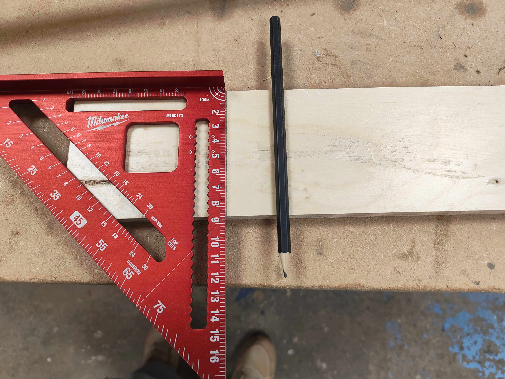
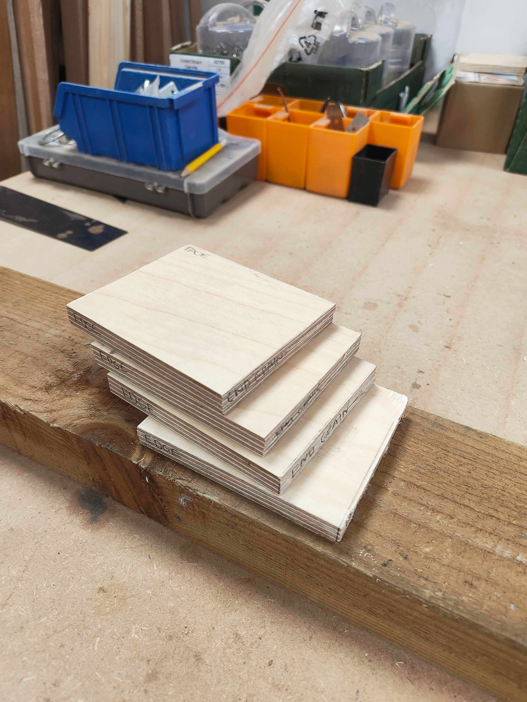

An morning at FizzPop, a few pieces of wood and the surprisingly involved business of making a straight cut.
What I tried
Today was my first proper morning in the woodworking space. I'd arrived by train with a little spare timber, a few tools and a fairly simple plan.
Measure. Cut. Repeat.
Nothing ambitious. Nothing particularly clever. Just a chance to get re-acquainted with the basics and start building some confidence. Finding myself in an quiet, unfamiliar workshop was perfect. It gave me time to figure out where the light switch was and the freedom to explore and find my bearings without feeling rushed. I found myself a small corner with a workbench and vice. Typical.What I noticed
Measuring deserves far more attention than I'd previously given it. Measure twice, cut once. Sometimes measure three times, just to be sure. There's no prize for rushing through the preparation. Taking the time to mark things out properly, check the measurements and understand where the cut needs to go is all part of the work. Before tackling my thicker piece of timber, I found some spare plywood to practice on. And then came the surprisingly complicated business of choosing a saw. The first was small, with fine teeth, but left a wider cut than I expected in the soft wood. The second was a large handsaw that got through the material much quicker, but felt rather excessive for the job. Third time lucky, I found a smaller, lightweight saw that felt much better suited to the plywood. A useful reminder that owning a tool and knowing when to use it are two very different things.
Then there was my posture. I started paying attention to where I stood, how I positioned myself and whether I could see both the face and edge of my cutting line. Stand too far back and you lose sight of what you're doing. Employing an uncomfortable stance, and all of a sudden you're fighting the saw rather than guiding it. I caught myself tensing up and pushing too hard.
Something I'd heard on a previous course came back to me: let the saw do the work. Long, steady strokes, using as much of the blade as practical. No forcing it. No racing towards the finish. Just find a rhythm.
And somewhere between measuring, marking and making another cut, I got a little lost in it. Two hours disappeared rather quickly.What I'm learning
Eight cuts might not sound like much, but each one gave me something new to think about. Starting the cut slowly is important. A saw that slips at the beginning can take you off your line.
I'm also becoming much more aware of the kerf, the material removed by the saw blade as it cuts. Cutting too close to the line, takes valuable millimeters each time, potentially making your cuts just off. Technique isn't just about what happens at the cutting edge. It's how you stand, how you hold the tool, how you position the material and how relaxed you are whilst working.
Next time
I'm not quite finished with measuring and cutting. In fact, I think we're only just getting acquainted. Eight cuts have left me with more questions than answers, which is probably a good thing. I've been thinking about the difference between being careful and being accurate. I spent plenty of time measuring, checking and making sure I didn't cut right on my marked line. But being cautious doesn't necessarily mean I'm getting the result I intended. I considered the fact I might be creating a different problem by leaving too much material behind.
I also want to understand what made that third saw feel so much better. Was it the size, the teeth, the balance or simply that I was becoming more comfortable? And then there's the question of technique. If I find myself forcing the saw again, I want to stop and work out why, rather than just trying harder.
These are small things, but I suspect they're the difference between repeating an action and actually developing a skill. For now, I want to learn how to recognise a good cut, understand a bad one and know what to change the next time.
Not just eight more cuts. Eight better-informed ones.

